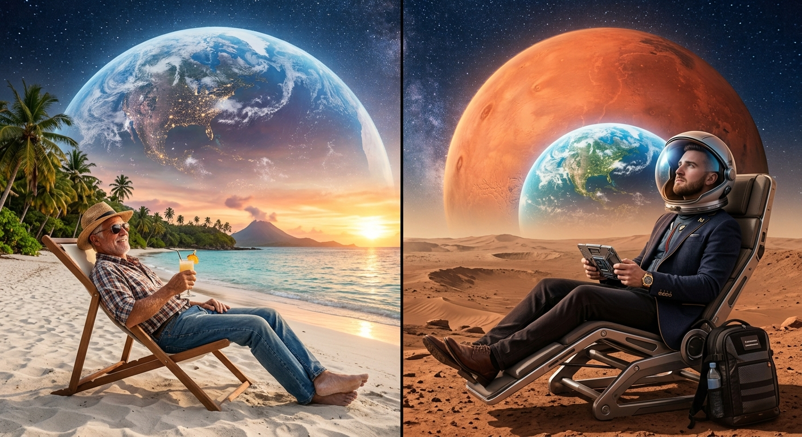
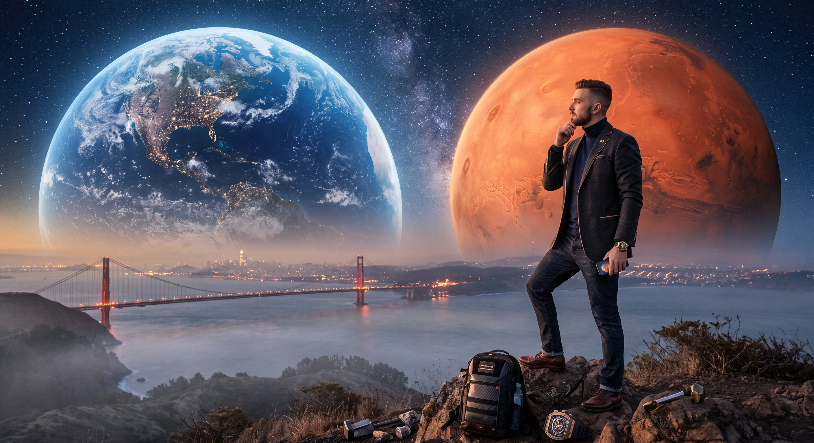
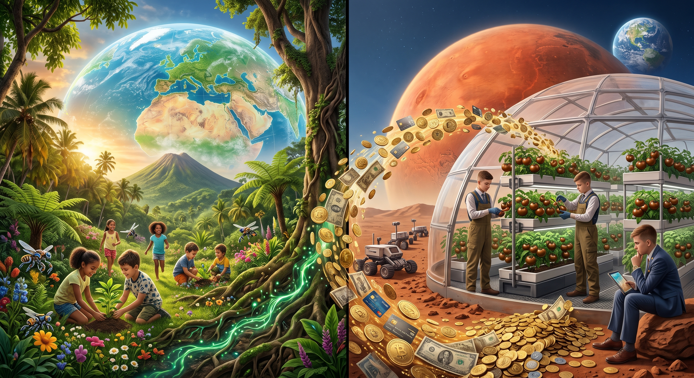
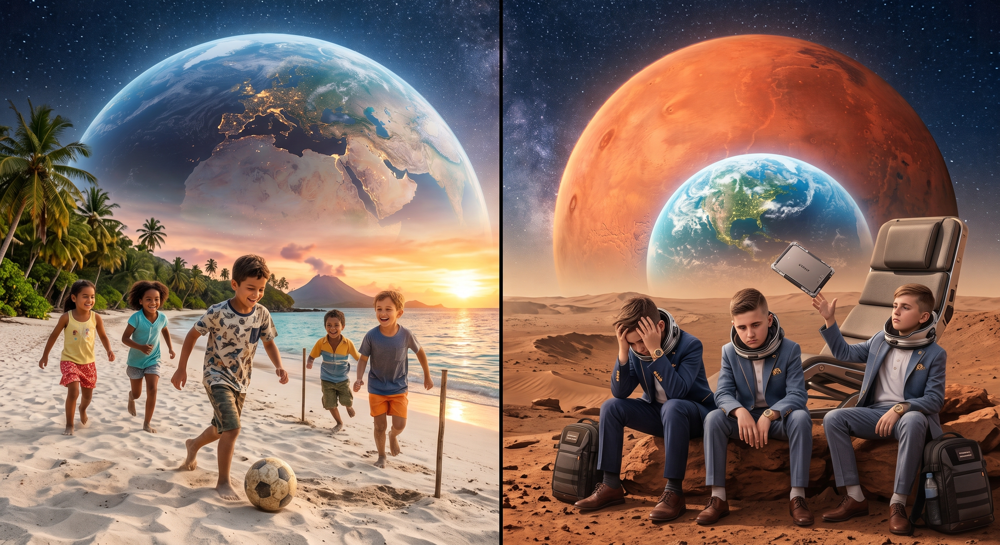

Beyond the knownA choice changes everything
Way to Mars

Choose your path

Into the distance
Almost thereDo you like your path?
;-)
A choice changes everything


Beyond the known
Into the distance
Almost there;-)